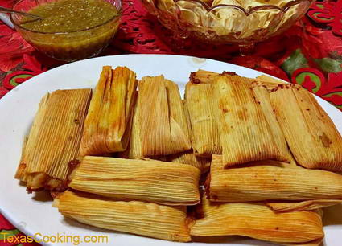

Tamales

Description
Tamales consist of a tube of dough with a meat filling.
Tamales are cooked by steaming
Ingredients
Filling:
- 1 package of dried corn husk
- 2 pound beef shoulder
- 3 tablespoons lard or vegetable shortening
- 1 teaspoon ground cumin
- 4 tablespoons chili powder
- 4 gloves garlic, minced
- 1 cup diced onions
Tamales dough (Masa):
- 4 cups Masa Harina
- 2 teaspoons baking powder
- 3 cups chicken broth
- 1/2 cup shortening or lard
- 1 teaspoon salt
- 1 teaspoon chili powder
Steps
For the filling
- "Trim away any ragged edges of corn husks if needed. Soak the husks in hot water for 30 minutes to one hour to soften.
Weigh them down in the water with a heavy plate so they stay submerged.
When soft, rinse them well and put back into a pot of clean water."
- While the husks are soaking, prepare the meat filling.
Cut the meat into 1- to 2-inch chunks. Heat the lard or shortening in a heavy bottomed pot and
brown the meat. When brown, add enough water to cover the meat and add the onions and garlic.
Simmer until the
meat is fork tender and flakes apart. For beef shoulder roast this will take 2 to 3 hours.
Drain and retain the broth. Let the meat cool. Shred the meat into small strands.
- In a heavy melt 2 tablespoons of shortening or lard. Add the chili powder and cumin, stir for
a few seconds. Add the meat and fry for two or three minutes. Stir over low heat until well blended.
Add the reserved broth and simmer until the liquid level is reduced.
The mixture should be soupy. Set aside to cool while you make the masa.
To make the dough or masa
- Mix the masa harina in a large bowl with the baking powder.
- Add 3 cups warm chicken broth to the mixture a little at a time. Beat with a wooden spoon or
mix with your hands until the dough is smooth and moist.
Use a little more broth if necessary, but the
mixture should not be loose.
- Beat the lard or shortening in a large bowl with an electric mixer on medium speed about 3 minutes,
until fluffy. Begin adding the masa dough mixture, a handful at a time. Scrape down the sides of
the bowl with a rubber spatula as necessary. Alternatively, beat in the masa mixture using your
bare hand as a whipping and folding tool. If the mixture becomes too stiff to beat, add up to 1
cup of tepid chicken or pork broth, a little at a time. When done, the mixture should be very
light and delicate, the texture of buttercream frosting.
Tamake assembly
- Remove a softened corn husk, and shake dry. Spread approximately 1-1/2 tablespoons or
more of masa in the center of the smooth side. If the masa is sticky, wet your hands.
Add about a tablespoon of meat filling on top of the masa.
- Roll the husk so that the filling is enclosed within the masa.
Don't worry if the filling is not perfectly surrounded by masa. When the masa cooks it will
become firm and the tamale will be fine. Fold over each end of the corn husk. If the husks are very thick, you may
find it difficult to fold the large end and get it to stay. If this is the case, don't
worry about folding the large end and put that end up when you put the tamales into the steamer.
- In a steamer, stand the tamales vertically, open end up. Cover with a damp cloth to
absorb the steam. Add boiling water to a
level of two inches. Cover tightly and bring quickly to a low boil. Keep the heat
to a gentle bubbling. Cook for 2 to 3 hours or until husks pull away from
filling.
- After 2 hours, pull out a tamale and sample it. Let it cool and then
unroll the husk. Cooked tameles should be soft and firm, not mushy.